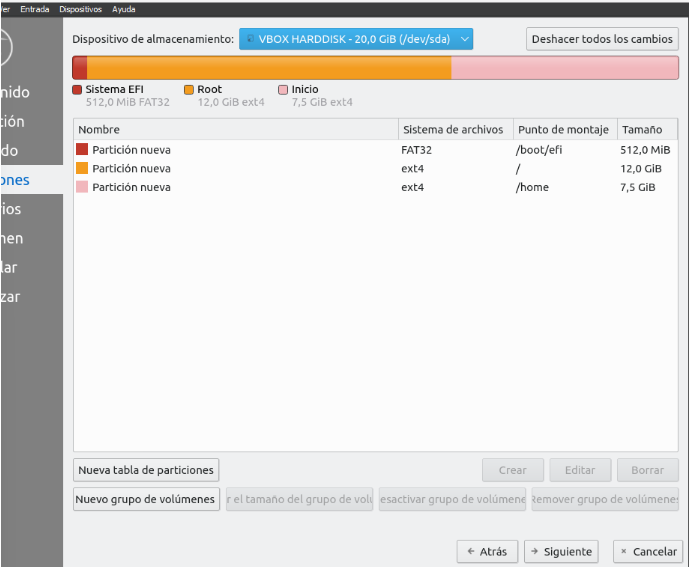

Inserida una captura de pantalla de Virtualbox amb la màquina configurada on es vegen les característiques de la maquina virtual creada
Aquí se pueden ver las características pedidas para la creación de la máquina virtual Lubbuntu 20.04.5
Entre las características solicitadas se encuentra el nombre de la máquina, la creación de un segundo disco duro, 4 GiB de memoria RAM, el orden de cómo se debe arrancar, teniendo en cuenta que primero va el disco óptico, en segundo lugar la tarjeta de red y en tercer lugar el disco duro. Por otra parte hay que activar las particiones EFI. Debe tener un procesador de dos núcleos, activar la función PAE/NX y dos tarjetas de red (una en adaptador puente y la otra en red interna)
Inseriu una captura de pantalla del menú de l'opció triada per a realitzar la taula de particions i CONTESTA A LES PREGUNTES
Aquí se pueden ver la opción de partición GPT.
És necessari realitzar una altra en sdb o serveix per als dos HDD? Per què? Cerca
la informació per a contestar-la en la teoria de classe i dedueix la resposta. En
què creus que consisteix la taula de particions de msdos i en quins sistemes
s'utilitzava? En els sistemes actuals es poden usar ambdues?
Es necesario realizar otra partición en sdb porque se tratan de HDD distintos, siempre y cuando se deseen segmentar ambos discos duros. Si solo se quiere partir uno, no hace falta hacer particiones en ambos.
La tabla de particiones MS-DOS se trata de una estructura de datos al principio de un disco duro que almacena la información sobre las particiones de ese disco. Esta tabla de particiones se utilizaba en sistemas compatibles con MS-DOS y otros sistemas operativos basados en DOS.
Inseriu una captura de pantalla de l’estat final del sda en GParted
Aquí se pueden ver la partición del sda.
Inseriu una captura de pantalla de l’estat final del sdb en GParted
Des de l'escriptori de Lubuntu arranca la instal·lació del sistema operatiu per a
instal·lar-lo en el HDD del teu MV, tria l'idioma Castellà o Valencià, configura el
teclat seleccionant l'idioma, tria el tipus d'instal·lació mínima sense que s'actualitze
(sinó pot tardar més d'una hora la instal·lació). Quan et demane realitzar l'operació
de triar un disc dur on instal·lar el Sistema Operatiu realitza la configuració de
manera manual.
Inseriu una captura de pantalla de les modificacions realitzades en els discos
durs i CONTESTA A LA PREGUNTA.

Particiones desde la instalación de Lubuntu del HDD sda
Particiones desde la instalación de Lubuntu antes y después.
Particiones desde la instalación de Lubuntu.
Que utilitat creus que pot tindre posar una partició com a punt de muntatge en /home?
Si se pone el punto de montaje en /home para la separación de datos, si se reinstala el SO, los datos personales no se verán afectados si no se formatea.
Facilidad en actualizaciones o cambios del sistema.
Mantenimiento y gestión más simple
Múltiples sistemas operativos, ya que si se tiene más de un sistema operativo instalado en el mismo disco duro, compartir la partición /home entre ellos permite acceder a tus datos desde diferentes sistemas sin duplicarlos.
Una de les particions són sistema de fitxers linux-swap de grandària 4GiB. ¿Quina relació té aquesta partició amb la grandària de la RAM?
la relación entre la partición de intercambio y la RAM se establece para proporcionar un espacio adicional cuando la RAM se llena, permitiendo que el sistema opere de manera más fluida en momentos de alta demanda de recursos.
Se utilizan varios comandos, entre ellos el mount y para desmontar se utiliza el umount
Para montar una partición:
Encontrar la partición: Puedes utilizar el comando lsblk o fdisk -l para listar los dispositivos de disco y sus particiones disponibles.
Crear un directorio para montar: Puedes crear una carpeta donde montarás la partición. Por ejemplo: sudo mkdir /mnt/particion.
Montar la partición: Utiliza el comando sudo mount /dev/sdXY /mnt/particion, donde /dev/sdXY es la ubicación de la partición que deseas montar.
Para desmontar la partición, utiliza el comando sudo umount /mnt/particion.
Para montar un pendrive:
Conectar el pendrive: Inserta el dispositivo USB.
Encontrar la ubicación del pendrive: Utiliza lsblk o fdisk -l para identificar el dispositivo asignado al pendrive (como por ejemplo /dev/sdb1).
Crear un directorio para montar: Ejecuta sudo mkdir /mnt/pendrive (o cualquier otra ubicación que prefieras).
Montar el pendrive: Utiliza sudo mount /dev/sdXY /mnt/pendrive, donde /dev/sdXY es la ubicación del pendrive.
Para desmontar el pendrive, utiliza sudo umount /mnt/pendrive